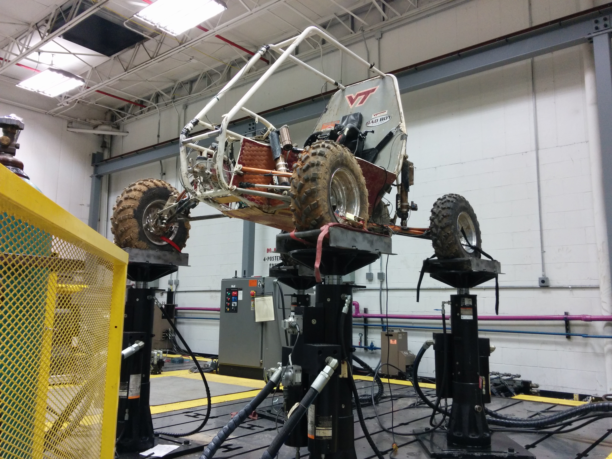

Chris Pillow is a veteran of the United States Navy.
During his six years as a naval engineer he maintained and repaired the USS Hartford, a nuclear attack submarine.
Following his service, Chris enrolled at Virginia Tech where he is pursuing a bachelors in Mechanical Engineering.